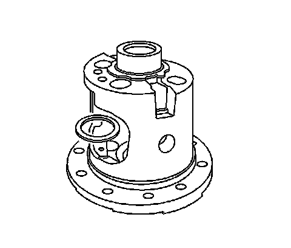
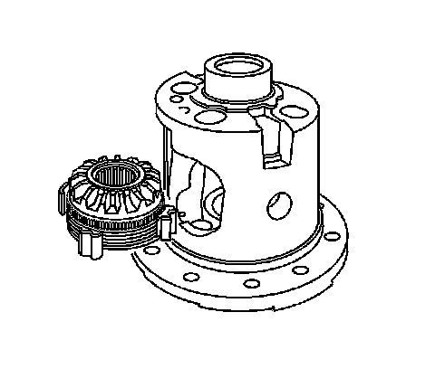
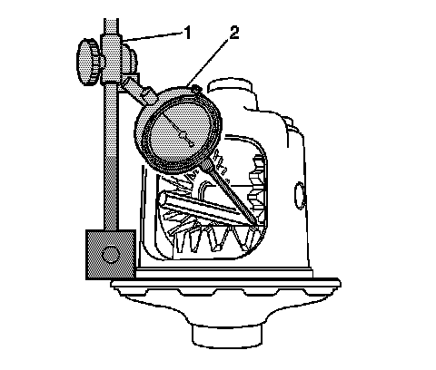
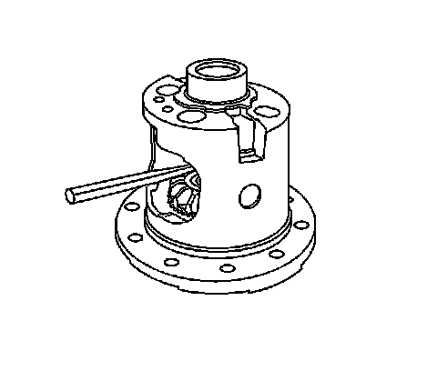
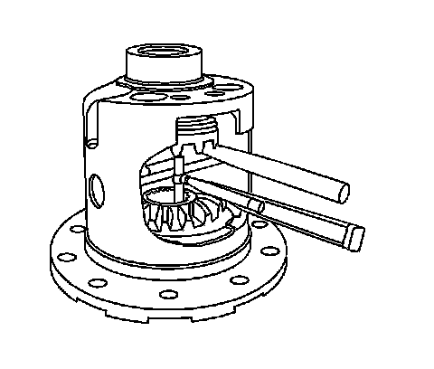

Locking Differential Adjustment (8.6 Inch Axle)
Locking Differential Adjustment (8.6 Inch Axle)
Tools Required
^ J 7872 Magnetic Base Dial Indicator
^ J 8001 Dial Indicator Set
Adjustment of the Differential
Important: If it is necessary to replace the left side locking differential side gear cam unit and clutch disc assembly, the right side locking differential side gear and clutch disc assembly, or the thrust block, the entire differential must be adjusted. The differential is adjusted using selective thickness thrust washers between the clutch disc assemblies and the case and/or different selective thickness thrust blocks.
When adjusting the differential, note the following:
^ Build up the clutch disc assemblies properly.
Proper clearance between parts is critical to the operation of the unit.
^ Adjust the backlash and thrust block clearance in the following order:
1. The left side gear backlash
2. The right side gear backlash
3. The thrust block clearance
Left Side Gear Backlash Adjustment

1. Install the new locking differential clutch disc thrust washer into the left side or flange-end of the differential case.

2. Install the locking differential side gear cam unit and clutch disc assembly into the left side or flange-end of the differential case.
3. Install the differential pinion gears with the differential pinion gear thrust washers into the differential case.
Align the openings of the differential pinion gears and the differential pinion gear thrust washer to the pinion shaft opening in the differential case.
4. Install the pinion shaft. It may be necessary to press down on the locking differential side gear cam unit in order to align the pinion gear shaft opening with the pinion shaft opening in the differential case.
If the pinion shaft cannot be installed after pressing on the locking differential side gear cam unit, replace the locking differential clutch disc gear thrust washer with a thinner washer.
Notice: Refer to Fastener Notice.
5. Install the pinion shaft lock bolt.
Tighten the pinion shaft lock bolt finger tight.
6. Rotate the pinion gear closest to the lock bolt so that one of the teeth is pointing downward, perpendicular to the ring gear flange.
7. Install a brass drift between the locking differential side gear cam unit and the pinion shaft.
Press the brass drift in far enough in order to compress the clutch discs.

8. Measure the backlash of the differential pinion gear and the locking differential side gear cam unit by doing the following:
1. Install the J 7872 (1) to the ring gear flange.
2. Loosely clamp the J 8001-3 (2) onto the stem on the J 7872 (1).
3. Place the contact pad of the J 8001-3 on one of the teeth of the pinion gear closest to the pinion shaft lock bolt.
Turn the dial of the J 8001-3 until the needle and the dial face indicate ZERO.
4. Tighten the lock nut of the J 8001-3 finger tight.
5. Pull the pinion gear firmly into the differential case seat.
6. Rotate the pinion gear back and forth.
7. Measure the backlash.
The backlash between the differential pinion gear and the locking differential side gear cam unit should be 0.254-0.406 mm (0.010-0.016 in).
9. If the backlash is too large, install a thicker locking differential clutch disc thrust washer and recheck the backlash.
10. If the backlash is too small, install a thinner locking differential clutch disc thrust washer and recheck the backlash.
Locking differential clutch disc thrust washers are available in the following sizes:
^ 0.559 mm (0.022 in)
^ 0.686 mm (0.027 in)
^ 0.813 mm (0.032 in)
^ 0.914 mm (0.036 in)
^ 1.016 mm (0.040 in)
^ 1.118 mm (0.044 in)
^ 1.219 mm (0.048 in)
^ 1.321 mm (0.052 in)
Right Side Gear Backlash Adjustment
1. If necessary, remove the following from the differential case:
1. The pinion lock shaft bolt
2. The pinion shaft
3. The differential pinion gears
4. The differential pinion gear thrust washers
5. The left side locking differential side gear cam unit and clutch disc assembly
2. Install the differential side gear shim into the right side or bell-end of the differential case.
3. Install the locking differential side gear and clutch disc assembly into the right side or bell-end of the differential case.
4. Install the differential pinion gears with the differential pinion thrust washers into the differential case.
Align the openings of the differential pinion gears and the differential pinion gear thrust washers to the pinion shaft opening in the differential case.
5. Press down on the locking differential side gear and install the pinion shaft.
If the side gear cannot be pressed down far enough to install the pinion shaft, replace the side gear shim with a thinner shim.
6. Install the pinion shaft lock bolt.
Tighten the pinion shaft lock bolt finger tight.
7. Rotate the differential pinion gear so that one of the teeth is pointing downward, perpendicular to the ring gear flange.

8. Install a brass drift between the locking differential side gear and the pinion shaft.
Press the brass drift in enough in order to compress the clutch discs.
9. Measure the backlash of the pinion gear and the right side gear by doing the following:
1. Install the J 7872 (1) to the ring gear flange.
2. Loosely clamp the J 8001-3 (2) onto the stem on the J 7872 (1).
3. Place the contact pad of the J 8001-3 on one of the teeth of the pinion gear closest to the pinion shaft lock bolt.
Turn the dial of the J 8001-3 until the needle and the dial face indicate ZERO.
4. Tighten the lock nut of the J 8001-3 finger tight.
5. Pull the pinion gear firmly into the differential case seat.
6. Rotate the pinion gear back and forth.
7. Measure the backlash.
The backlash for the pinion gears should be 0.076-0.229 mm (0.003-0.009 in).
10. If the backlash is too large, install a thicker differential side gear shim and check the backlash.
11. If the backlash is too small, install a thinner differential side gear shim and check the backlash again.
Differential side gear shims are available in the following sizes:
^ 0.254 mm (0.010 in)
^ 0.381 mm (0.015 in)
^ 0.508 mm (0.020 in)
^ 0.635 mm (0.025 in)
^ 0.762 mm (0.030 in)
^ 0.889 mm (0.035 in)
^ 1.016 mm (0.040 in)
^ 1.143 mm (0.045 in)
Thrust Block Clearance Adjustment
Important: The left and right side gear backlash measurements must be done before the thrust block measurement can be completed.
1. Install the locking differential clutch disc thrust washer into the left side or flange-end of the differential case.
2. Install the locking differential side gear cam unit and clutch disc assembly into the left side or flange-end of the differential case.
3. Install the differential side gear shim into the right side or bell-end of the differential case.
4. Install the locking differential side gear and clutch disc assembly into the right side or bell-end of the differential case.
5. Install the pinion shaft.
6. Install the pinion shaft bolt.
Tighten the pinion shaft bolt finger tight.
7. Install a brass drift between the left locking differential side gear cam unit and the pinion shaft.
Press the brass drift in far enough in order to compress the clutch disc assembly and hold the left side gear assembly in place.
8. Install a brass drift between the right side locking differential side gear and the pinion shaft.
Press the brass drift in far enough in order to hold the right side gear assembly in place.

Important: Do not measure the distance between the side gear teeth.
9. Measure the distance between the side gear faces using a 25.4-50.8 mm (1-2 in) telescoping gage.
10. Remove the telescoping gage.
11. Measure the telescoping gage with a micrometer.
Record the measurement.
12. Compare the measurement obtained in step 11 to the thrust block sizes available. If the measurement is equal to one of the thrust blocks sizes available, then select that thrust block.
13. If the measurement obtained in step 11 is not equal to one of the thrust blocks sizes available, then select the thrust block that is smaller than the measurement.
For example, if the measurement is 33.833 mm (1.332 in), select the 33.782 mm (1.330 in) thrust block.
Important: The backlash must be rechecked and adjusted to specification anytime the left and/or the right thrust washers are replaced.
14. If the measurement obtained in step 11 is less than 33.578 mm (1.322 in), then reduce the left side gear thrust washer or the right side gear shim thickness in order to increase the thrust block opening.
15. If the measurement obtained in step 11 is greater than 34.290 mm (1.350 in), then increase the left side gear thrust washer or the right side gear shim thickness in order to decrease the thrust block opening.
16. Recheck the left and/or right side gear backlash and adjust as necessary.
17. Recheck the thrust block clearance and adjust as necessary.
18. Assemble the differential.